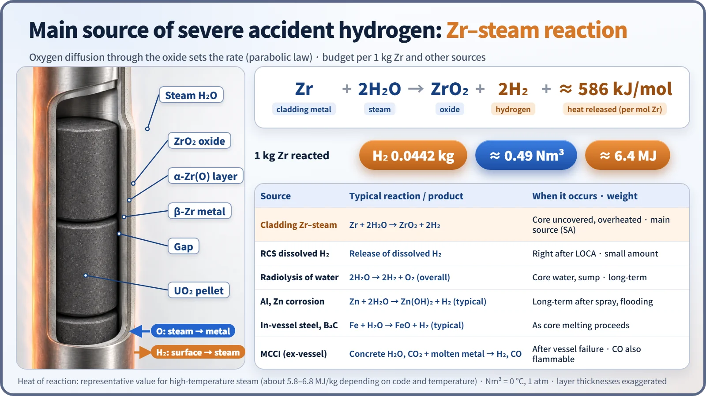
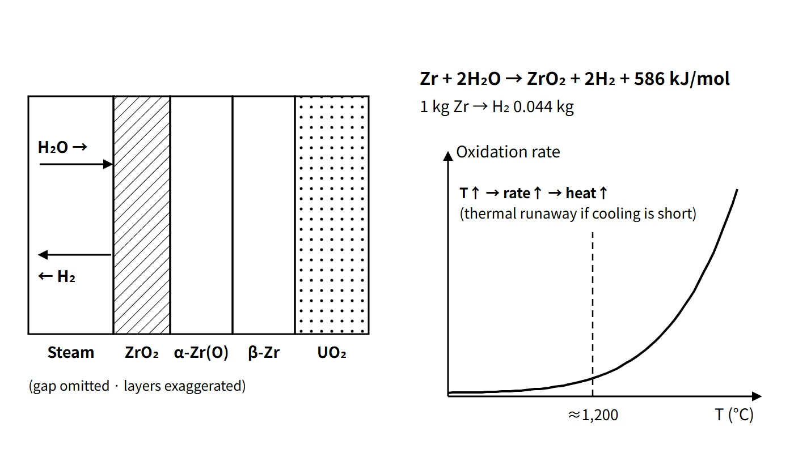

Accidents, Safety Analysis & Severe Accidents · C-SA-008
Hydrogen Sources in Accidents — Mass Balance and Rate Laws of the Zr–Steam Reaction, and Other Sources
How much hydrogen hot cladding produces, how fast the reaction runs, and the slower sources that add to it.
Hydrogen sources in accidents are the origins of the hydrogen released into containment during loss of coolant and core overheating; the main source is the oxidation of hot zirconium-alloy cladding by steam, the Zr–water reaction (Zr + 2H₂O → ZrO₂ + 2H₂, exothermic), followed by radiolysis of water, Al and Zn corrosion, dissolved hydrogen in the primary system, and, in severe accidents, steel oxidation and MCCI. This note concentrates on where hydrogen comes from, how much is produced and how fast.
Principle and mechanism
Stoichiometry and heat of the Zr–steam reaction
Cladding (Zircaloy, ZIRLO, M5 and others, about 98 % Zr by mass) is protected by a thin oxide film at normal operating temperature (about 350 °C). When coolant is lost and the core is uncovered, cladding temperature rises, and above about 1,000 °C oxidation by steam speeds up.
- Reaction: Zr + 2H₂O(g) → ZrO₂ + 2H₂ + about 586 kJ/mol (Zr)
- Hydrogen yield: 2 × 2.016 / 91.22 = 0.0442 kg H₂/kg Zr, about 0.49 Nm³/kg Zr at standard conditions
- Heat of reaction: about 6.4 MJ/kg Zr (for high-temperature steam; quoted as about 5.8–6.8 MJ/kg depending on code and temperature)
The reaction proceeds from the outside in. A ZrO₂ oxide layer forms on the cladding surface; oxygen diffuses through it toward the metal and forms beneath it an α-Zr(O) layer with dissolved oxygen, while β-Zr metal remains innermost. Because oxygen diffusion through the oxide controls the rate, the amount oxidized is proportional to the square root of time (parabolic law). Most of the hydrogen produced is released to the coolant side; part is absorbed by the cladding and causes hydriding and embrittlement.

Rate laws and thermal self-acceleration
Isothermal oxidation is written w² = K(T)·t, with K = A·exp(−Q/RT) (w: mass of Zr reacted per unit area).
| Correlation | Original form | SI form (kg Zr/m²)²/s | Use |
|---|---|---|---|
| Baker-Just (1962) | w² = 33.3×10⁶·t·exp(−45,500/RT), mg Zr/cm² | K = 3,330·exp(−22,900/T) | Conservative evaluation under 10 CFR 50 Appendix K |
| Cathcart-Pawel (1977) | oxygen uptake w_O² = 0.3622·t·exp(−39,940/RT), g/cm² | K = 294·exp(−20,100/T) (Zr equivalent ×2.85²) | Best estimate (about 1,000–1,500 °C) |
R = 1.987 cal/mol·K. Note that 45,500 cal/mol (about 190 kJ/mol) is the activation energy, not the heat of reaction. At 1,200 °C and the same oxidation, the ratio of reaction rates is about 1.7 (about 1.3 as a ratio of oxidation over the same time), so Baker-Just predicts more (conservatively).
As temperature rises the oxidation rate grows exponentially, and if cooling is insufficient the oxidation heat raises the temperature further. This thermal feedback is often called "autocatalytic", but it is not chemical catalysis; it is thermal runaway. Compared per metre of average rod and assuming the point at which oxidation reaches 3 % ECR, the oxidation heat rate becomes similar to the decay heat between 1,000 s and 3 h after shutdown (0.25–0.14 kW/m) at about 1,090–1,180 °C. Since the heat balance is C′·dT/dt = q′decay + q′oxidation − q′cooling, this crossing does not by itself mean runaway, but in an uncovered core with too little cooling the temperature rise becomes steep from around here. That is the basis for textbooks saying "the reaction accelerates sharply above about 1,200 °C", and why the 1,204 °C limit sits just below it.
![Log-scale chart of cladding oxidation heat rate per metre of average rod from 1,000 to 1,500 °C: the Baker-Just curve rises from about 0.044 to 7 kW/m and the Cathcart-Pawel curve from about 0.035 to 3 kW/m, crossing a grey decay heat band of 0.25 to 0.14 kW/m at about 1,090 to 1,180 °C, with a dashed line at 1,204 °C and a ratio of about 1.7 at 1,200 °C; a table gives isothermal times to 17 % ECR of 35 and 52 minutes at 1,100 °C, 11 and 19 minutes at 1,204 °C, and 4.2 and 8.1 minutes at 1,300 °C](../../assets/images/concepts/c-sa-008-hydrogen-sources/fig2-oxidation-heat-vs-decay.webp)
ECR (equivalent cladding reacted) is the equivalent metal thickness consumed if all absorbed oxygen formed ZrO₂, divided by the cladding thickness before oxidation; it differs from the actual oxide thickness. The isothermal time to reach 17 % ECR (for 0.57 mm cladding) is about 11 minutes with Baker-Just and about 19 minutes with Cathcart-Pawel at 1,204 °C, falling to about 4–8 minutes at 1,300 °C (instant isothermal, one-sided oxidation approximation; a teaching calculation, not an allowed time after an accident). Above about 1,500 °C oxidation becomes faster still, and around 1,850 °C the Zr melts and relocates. When steam is scarce (steam starvation), the production rate is limited by the steam supply. Experiments (QUENCH) and TMI-2 also confirmed that during reflood, when water is put back into an overheated core, the oxide cracks and hydrogen can surge.
Other sources
| Source | Reaction | Timing and features |
|---|---|---|
| Dissolved hydrogen in the primary system | Release of dissolved H₂ (typically 25–50 cc/kg) and the pressurizer vapor space | Right after a LOCA; small amount |
| Radiolysis of water | 2H₂O → 2H₂ + O₂ (overall) | Core water and sump; long-term, continuous |
| Aluminum corrosion | 2Al + 6H₂O → 2Al(OH)₃ + 3H₂ (typical) | Fast in alkaline spray solution |
| Zinc corrosion | Zn + 2H₂O → Zn(OH)₂ + H₂ (typical) | Galvanizing and inorganic zinc paint; long-term |
| Steel and B₄C oxidation | Fe + H₂O → FeO + H₂, etc. | As core melting proceeds |
| MCCI (ex-vessel) | Concrete decomposition H₂O, CO₂ + molten metal → H₂, CO | After vessel failure; CO is also flammable |
What it means in a plant
The key is the difference between design basis and severe accidents. In a design basis LOCA the ECCS acceptance criteria hold the cladding reaction to the 1 % level, so Zr–water hydrogen is small; the concern was slow generation accumulating over the long term from radiolysis and corrosion. That is why older designs had electric recombiners. In a severe accident the core stays uncovered for a long time, the Zr–steam reaction dominates, and the rate and total amount far exceed recombiner capacity.
- Complete reaction of about 22.7 t of active-region cladding (approximated as Zr) → about 1.00 t of H₂ (about 498 kmol), oxidation heat about 146 GJ (about one hour of 1 % decay heat)
- Free volume about 89,000 m³, initial dry air at 1 atm, no removal → mole fraction about 11.1 % at 0 °C and about 12.0 % at 25 °C
- The 1 % criterion of 10 CFR 50.46(b)(3) corresponds to about 10 kg of hydrogen
At TMI-2 (1979) about 45 % of the cladding is estimated to have oxidized, producing about 460 kg of hydrogen; about 10 hours later a hydrogen burn in containment caused a recorded pressure rise of about 0.19 MPa (28 psig).
Regulatory and design criteria
The criteria below are examples from the United States (US NRC).
| Basis | Hydrogen-related point |
|---|---|
| 10 CFR 50.46(b)(1)–(3) | Peak cladding temperature 2,200 °F (1,204 °C); total oxidation 0.17 times the cladding thickness (17 % ECR); maximum hydrogen generation = 0.01 times the hypothetical amount if all the cladding reacted |
| 10 CFR 50 Appendix K | Metal–water reaction rate calculated with the Baker-Just equation |
| RG 1.157 (1989) | Best-estimate correlations such as Cathcart-Pawel in the high-temperature range |
The US prepared a final rule for 50.46c (performance-based ECCS acceptance criteria that lower the oxidation limit according to hydrogen uptake), but it was returned to the staff by the Commission's SRM on SECY-16-0033 in April 2024, so the current 50.46(b) remains. An NRC proposed rule of 16 July 2026 (FR 2026-14341) proposes to place the performance-based approach and embrittlement research of 50.46c in a new voluntary alternative, 10 CFR 50.46a (the existing 50.46a being redesignated 50.46b), together with FFRD; as of October 2026 it is at the proposed stage.
The 2003 revision of 50.44 removed the requirements for design basis LOCA hydrogen (radiolysis and the like) and shifted the focus to severe accident hydrogen; recombiner systems sized for a postulated design basis accident reflect the earlier concept.
Easily confused pairs
| Baker-Just | Cathcart-Pawel | |
|---|---|---|
| Published | 1962 (ANL-6548) | 1977 (ORNL/NUREG-17) |
| Quantity measured | Zr reacted | Oxygen uptake (×2.85 for Zr equivalent) |
| Rate at 1,200 °C | About 1.7 times larger | Reference |
| Regulatory use | Conservative Appendix K evaluation | Best estimate |
| 17 % ECR | 1 % hydrogen criterion | |
|---|---|---|
| Applies to | The most oxidized local spot | All cladding in the core |
| Definition | Equivalent oxidized thickness ÷ thickness before oxidation | Hydrogen produced ÷ hypothetical amount if all cladding reacted |
| Purpose | Cladding ductility (no shattering on quench) | Limit on the core-wide reaction |
"Autocatalytic" means thermal runaway, not catalysis, and 17 % ECR does not mean "17 % of the cladding turns into hydrogen". 1,204 °C is not the temperature at which the reaction starts; it is a design limit just below the sharp acceleration.
Key points at a glance
- Definition: the origins of hydrogen released into containment in an accident; the main source is the Zr–steam reaction of hot cladding.
- Main reaction: Zr + 2H₂O → ZrO₂ + 2H₂ + 586 kJ/mol; 0.0442 kg H₂/kg Zr; about 6.4 MJ/kg.
- Rate: parabolic law controlled by diffusion through the oxide, w² = K·t; Baker-Just (Appendix K, conservative), Cathcart-Pawel (best estimate).
- Self-acceleration: above about 1,200 °C oxidation heat > decay heat → thermal runaway; hydrogen can surge on reflood.
- Dissolved hydrogen: H₂ used for RCS oxygen control, released right after a LOCA.
- Radiolysis: 2H₂O → 2H₂ + O₂, long-term and continuous.
- Metal corrosion: 2Al + 6H₂O → 2Al(OH)₃ + 3H₂; Zn + 2H₂O → Zn(OH)₂ + H₂.
- Severe accident additions: steel and B₄C oxidation, MCCI (H₂, CO).
- Regulation: 50.46(b) 1,204 °C, 17 % ECR, 1 % hydrogen; 50.44(c) below 10 vol% for uniform hydrogen from a 100 % reaction.
- APR1400 example: about 22.7 t of cladding → about 1.0 t of H₂ → average about 11–12 % (before removal).
